Back on the Commodore 64, running the one line BASIC program above was nerd-famous for being a simply idea that can build something complex. When run, it produces a maze-like design that represents generating complexity from a simple pattern.
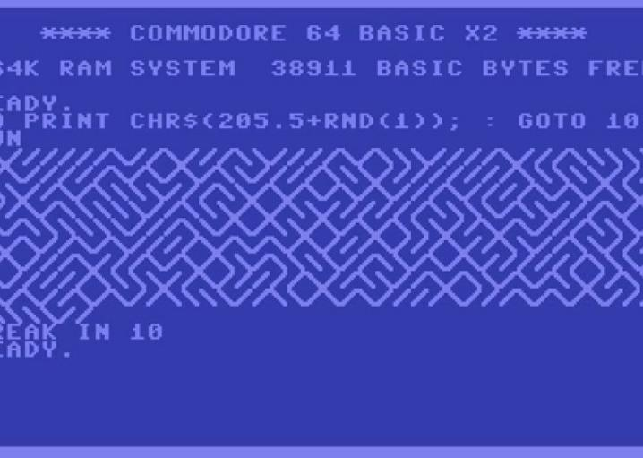
It is essentially an infinite loop that randomly printed either a forward slash, or a back slash. The ending effect looks something like a maze.
Though it might not look like it, this is a grid problem. Click the canvas above and it will show the grid of boxes that is used to create the design (your sketch doesn't have to do this).
Notice that each tile is only one of two options: a frontslash or a backslash.
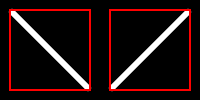
In the draw function, write a nested loop that represent x and y values to fill the screen. Both loops should start their variables at 8 and increase by 16 each step until they reach the width/height.
We need to draw a diagonal line at each location. One way to accomplish the would be to draw lines that use x and y as a reference point. For example, line(x-8,y-8,x+8,y+8) would draw a backslash line at each location.
For the sake of this design, we are going to change our strategy a little bit. We will instead use translation to draw lines at each location. This means that we will: Translate to the xy location Draw the line as if it were centered at (0,0) Call resetMatrix() to undo the translation
For now we will draw a backslash at each location. Inside your loop add the following lines:
translate(x,y); //translate to location line(-8, -8, 8, 8); //draw a backslash resetMatrix(); //reset translation
Since we're drawing the same backslash at each location, the design will not be impressive
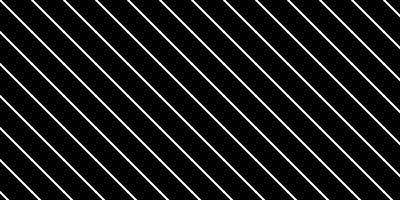
Many students will forget to reset the translation after each drawing. Temporarily comment out this line and observe the result of running the program.
We're translating within a loop, and if we don't reset that translation will build and build each time the loop comes around. After a small amount of time the translation has built up so much that most of the drawing is off of the screen.
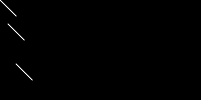
A key to getting the pattern that we desire is to randomly draw either a backslash or a frontslash. We are going to accomplish this by realizing that a fronslash is just a 90 degree rotation of a back slash.
Modify your loop to rotate 90 degrees right before the slash is drawn:
translate(x,y); //translate to location rotate(90) //rotate 90 line(-8, -8, 8, 8); //draw a backslash resetMatrix(); //reset translation
This now produces lines that go in the opposite direction
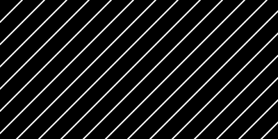
We are now set up to have a situation where rotation determines what is drawn: Rotating 0 degrees draws a backslash Rotating 90 degrees draws a frontslash
The next step is to modify your loop so that it chooses to rotate 0 or 90 degrees randomly. You cannot simply choose a random number that is less than 90, random(90), as it will generate all values in between. Modify the inside of your loop to:
By randomly choosing to rotate 0 or 90 at each location, running the program should now produce the design that we want.
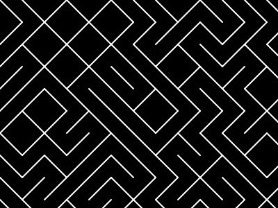
This will be a common strategy that we use today. We will create a design that fits with itself when rotated, then use translation and rotation to draw it in a grid. By rotating randomly, we should get a different design each time we run our program.
The rotation strategy makes it easier for us to generate our tile based designs. All we need to do is properly center our design, and rely on drawing a rotated version of it at all locations.
Truchet tiles are a set of designs that have some sort of rotational symmetry that allows them to fit together to make a more complex design. Perhaps the most famous Truchet Tiles are the four ways of filling half of a square with a triangle in four orientations.

These tiles can be combined in different orders to create more complex designs.
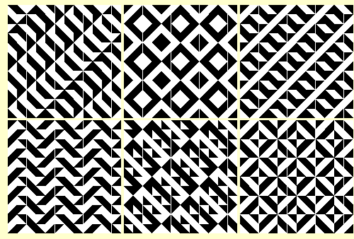
We are going to use randomization to generate patterns like this:
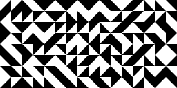
Open the Triangular Truchet workspace. Notice that there is a global variable in the design:
let TILE_SIZE = 48;
The purpose of this variable is to act as a 'setting' for our design, representing how large each of our tiles should be. As we program our design, we want to keep this variable in mind.
Before we do any looping, we want to make sure that our design will fit into the box that we're trying to put it into. Some starter code has been provided that simply draws a box on the canvas
//Guidelines translate(TILE_SIZE,TILE_SIZE); noFill(); rect(0,0,TILE_SIZE); fill(0); //End guidelines
It translates and draws a square on the canvas. Our goal will be to have a triangle drawn in the center of box.
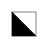
We want to use a triangle() command to draw our design. As a reminder, triangle() takes in six parameters representing its three vertices.
triangle(x1,y1,x2,y2,x3,y3)
Our goal is to:
This means that the x and y values of our box range from -TILE_SIZE to +TILE_SIZE
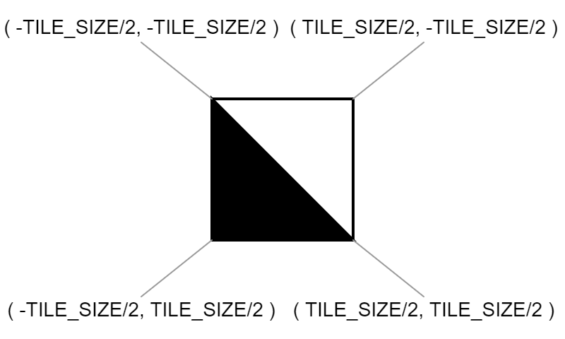
After the guidelines code in draw(), use the triangle command to draw a triangle connecting three of the points above. It will be ugly, as it will include the TILE_SIZE variable in all six parameters.
When complete, run the program and look for a triangle that fills in half of the square. If done properly, you should be able to change the global TILE_SIZE variable to any size and still see a triangle that fits nicely within the square.
Now that we have a proper call to triangle, you can delete the 'guideline' code that was previously provided (save the call to triangle);
translate(TILE_SIZE,TILE_SIZE); noFill(); rect(0,0,TILE_SIZE); fill(0);
Our next goal is to draw a triangle at a grid of locations using translate()/resetMatrix().
In your draw function, use a nested for loop that will generate a grid of xy values. They should start at TILE_SIZE/2, and increase by TILE_SIZE until they hit the width/height of the canvas.
For each xy point generated:
The get a proper design should also adjust the TILE_SIZE at the top of the program to be small.
let TILE_SIZE = 20;
If done properly, you should get a grid of triangles
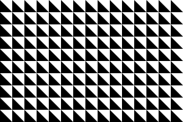
Now that we're drawing a triangle at each location properly, the last step is to add a randomized rotation before drawing them. But we don't want it to be a completely randomized angle, we specifically want a rotation of 0, 90, 180, or 270. Like before we will use random integers to get a multiple of 90.
Inside your loop, after you've translated but before you've drawn your triangle:
This should cause each triangle to have a randomized, multiple of 90, rotation when they're drawn. Run your program to see your design.
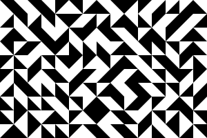
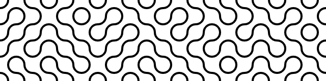
The pattern above is drawn using this tile:
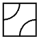
Open the Squiggly Truchet and you will see a workspace similar to the previous one:
Again, our first step is to make a design that fits into the guideline box when run. Like before the corners of the box are related to the TILE_SIZE variables.
Upper-Left corner: (-TILE_SIZE*0.5, -TILE_SIZE*0.5)
Bottom-Right corner: (TILE_SIZE*0.5, TILE_SIZE*0.5)
Our goal is to draw an arc from each of these corners. We don't have much experience with the arc command, but it is related to the ellipse command. For example, add the following after the guideline code:
ellipse( -TILE_SIZE*0.5, -TILE_SIZE*0.5, TILE_SIZE*0.5, TILE_SIZE*0.5);
This will draw a circle that:
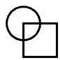
This reached outside the tile, so it's not exactly what we want.
The arc() function is how we can draw only the portion of the circle that is inside the square. We just need to know the starting and stopping angles to use. Zero degrees is directly to the right of center, and angle increases as we go counterclockwise. This means that the arc we want to draw starts at 0 and stops at 90. Replace the ellipse with this:
ellipse( -TILE_SIZE*0.5, -TILE_SIZE*0.5, TILE_SIZE*0.5, TILE_SIZE*0.5);arc( -TILE_SIZE*0.5, -TILE_SIZE*0.5, TILE_SIZE*0.5, TILE_SIZE*0.5, 0, 90);
This will keep the size of the previous circle, but only drawy the portions that are inside the square.
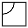
Your task is to draw the other arc centered on the opposite corner (TILE_SIZE/2, TILE_SIZE/2), with the same radius, and going from 180 to 270.
It's time to repeat our tile across the canvas, before we do you need to:
In the draw() function, like before, generate a grid of xy values which start at TILE_SIZE/2, and increase by TILE_SIZE until they hit the width/height of the canvas. For each xy value you will again:
This should look very similar to the triangle tile's workspace. The only difference is that this time you only have two rotations to choose between. This means that this time your random number should be from 0 or 1 instead of 0 to 3.
If done properly, running your program should get a result like this:
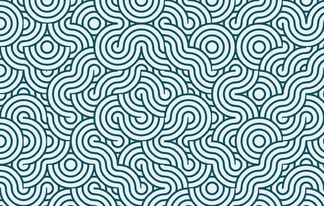
This is a variation of the previous pattern, but this time there are several arcs making ribbons, causing a bit of an overlapping effect.
Open the Ribbons workspace and again notice that we have some guideline code to help us design our tile. The goal is to get one like this:
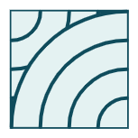
This tile design is like the previous one, where we are drawing arcs centered around the corners of the tile: (TILE_SIZE*0.5, TILE_SIZE*0.5) and (-TILE_SIZE*0.5, -TILE_SIZE*0.5). The difference is that we're drawing multiple arcs of differing sizes.
Remember the key pieces of the call to arc that we used:
arc( -TILE_SIZE*0.5, -TILE_SIZE*0.5, TILE_SIZE*0.5, TILE_SIZE*0.5, 0,90);
To get the ribbon design, we want to draw four arcs from each of the two corners. This will require multiple calls to arc() with the same location and angle range, only varying in their size. This means we only need to change a small portion of the call:
arc( -TILE_SIZE*0.5, -TILE_SIZE*0.5, TILE_SIZE*0.5, TILE_SIZE*0.5, 0,90);
To evenly split the tile into four arcs, we would need sizes that are:
Draw the ribbon design using multiple similar calls to arc. This pattern may be accomplished with a loop or simply a few copy-pastes. Keep in mind a few things:
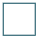
Once your single tile looks good:
Like before your job is to now draw the design everywhere. Update draw to have a nested loop generating xy values. Each time translate, rotate, and draw your design before calling resetMatrix(). This time there are four possible rotations for your design, so make sure that you're generating an integer from 0 to 3, that is then mutliplied by 90 to provide your rotation.
Run your program to make sure that you get the desired result.
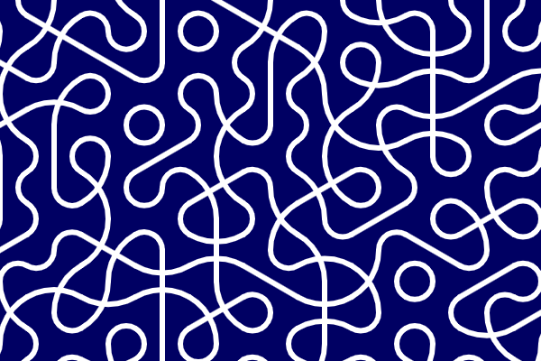
The above squiggle is generated using tiles, but this time it was created using hexagonal tiles.
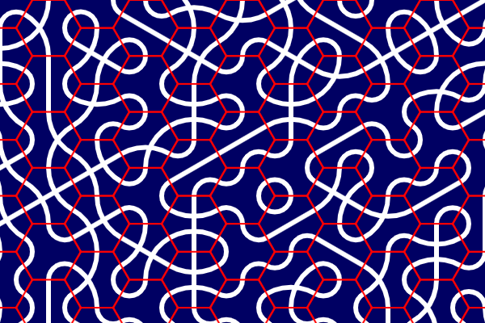
There are four tiles that make it up.
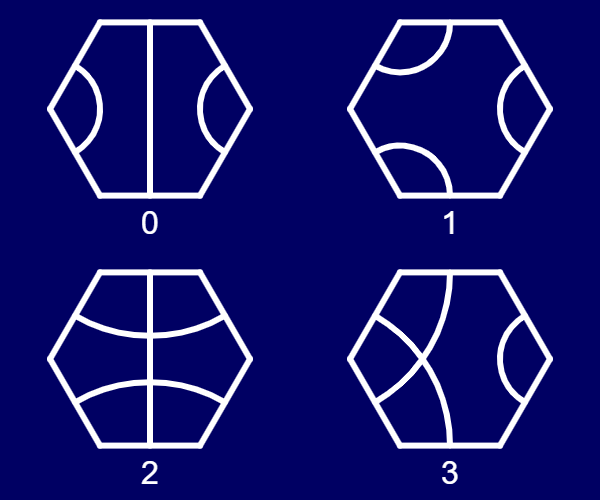
tile() function
Open the Hexagonal Tiles workspace, which is a little different than the previous tile programs. This time, drawing the tile design is intended to be done entirely within the tile() function.
function tile(num)
Since there are four different tile designs, the tile function accepts a parameter that represents which design should be drawn: 0, 1, 2, or 3.
The provided code for the program calls tile() four times on the canvas with the four different parameters. Since the tile() function is completely empty, so are those hexagons. Your first task is to implement the tile() function so that it produces the above image when run.
To help with this, add an else-if chain to the tile() function where each section checks if the parameter num is one of the four possible values: 0, 1, 2, or 3. Within each section of the if statment you will put the code that will draw that tile's design. If the parameter is 0, draw that tile design, if it's 1, draw a different tile design, etc..
There are two global variables that determine the size of the hexagons being drawn:
r represents the radius of the hexagon, the distance from the center to one vertexh represents the height of the hexagon overallUsing these variables will help us easily resise the tiles when we need to adjust them.
Drawing all of the arcs and lines can be tricky. To help, at the top of the tile() function you have been given
three commands that should help:
Small Arc: arc(r,0,r,r,120,240);
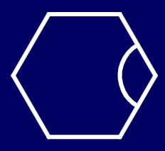
Big Arc: arc(1.5*r,h/2,3*r,3*r,180,240);
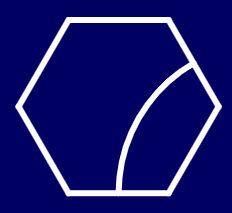
Vertical Line: line(0,-h/2,0,h/2);
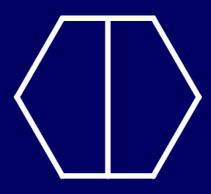
These are the three shapes that make up the tiles that we see, but they are not always in the correct position. This is where rotation will be useful. Each vertex of the hexagon is a 60 rotation from the next one. You can perform a rotation before drawing one of the shapes to get it into the right place.
For example, the original small arc is centered around the rightmost vertex. If you are creating tile #2 and need a small arc at the bottom-left vertex, you simply need to rotate it 120 degrees before drawing:
rotate(120);
arc(r,0,r,r,120,240);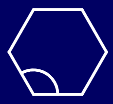
With this strategy, you should only need the three provided shapes in order to create the designs in all four hexagons.
Your task is to implement the tile function.
num to determine which tile you're drawingNote: Rotation can build up. If you've already rotated 120 degrees to draw the bottom-left arc, the upper-left arc, which is 240 degrees from the original, will only require 120 more degrees of rotation.
When complete, running the program should give you all four tiles.
Now that the tile() function works, move to the draw function and delete the call to tileTest(). This will remove the four hexagons that we've been working wth
Your task now is to complete the design. Again we are going to use translation and rotation to our advantage:
0, 60, 120, 180, 240, 3000, 1, 2, 3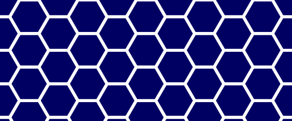
With hexagons, we are not generating a grid of values anymore. Instead, we need to generate a honeycomb pattern, which is a little bit trickier.
To help with the placement of our tiles, you've been provided with a hexagon() method. It will draw an empty
hexagon of the correct size at (0,0). Once we've used it to create the honeycomb pattern above, we can replace
it with calls to tile() and get our design.
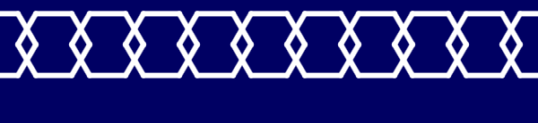
Notice that a single row of our honeycomb is not in a straight line. Every other hexagon is drawn a half-step down the canvas.
Write a loop that will generate x values that go across the canvas, starting at 0 and increasing by 1.5*r each step.
Inside the loop, translate to (x,0) and call the hexagon() command before calling resetMatrix().
Since all hexagons are drawn at the same y, running the program should show a row of overlapping hexagons.
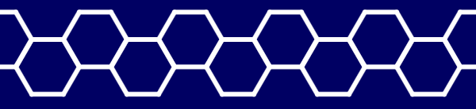
To get everything to line up, we want every other hexagon to be translated a little extra. This is where a counting variable can be useful. Before the loop, declare a counting variable and assign it a 0. At the end of the loop, increase that count by 1. Now, each time the loop runs it is one value larger, which we can take advantage of because it will be flipping between even and odd values.
Modify the loop so that it will first translate to (x,25), but then use an if statement to check and see if the counting variable
is odd. If so, translate is an extra half-height: translate(0,h/2).
If done properly, running the program again should show the hexagons aligned properly.
Getting the full honeycomb we will need to incorporate another loop to represent the y coordinates of each hexagon.
In the draw() function, put your x-loop within a for loop that will generate y values that fill the canvas,
starting at 0 and increasing by h each step. Then modify the inside of your loops to call translate(x,y);
before drawing each hexagon.
We have to be careful about the counting variable getting off. It should always be 0 when the x loop begins its process, so make sure that your line that assigns it a 0 is the first line of your y-loop, but before the x-loop starts.
If done properly, you should now get the full honeycomb effect when you run your program.
Now that the locations are being generated properly, we can place our tiles. Remove the call to hexagon() that is inside your
nested loop and replace it with a call to:
tile(1);This has no randomization yet. It will draw tile 1 at every single location. The result will be circles drawn all over the place
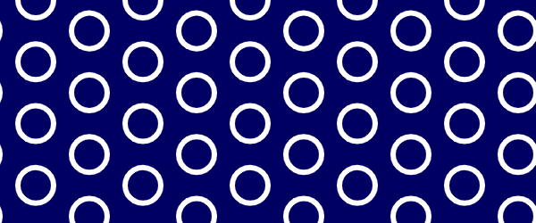
Before drawing each tile we want to rotate it: 0, 60, 120, 180, 240, or 300 degrees.
floor())
Rotate this amount right before calling tile(). Call resetMatrix() directly after so that things don't get crazy.
With this random rotation, you should now get something more like this:
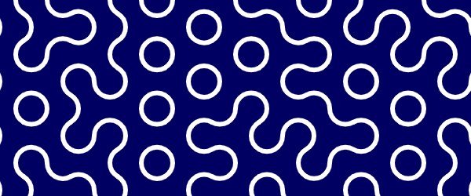
Modify your loop to generate a random integer 0 through 3, and call the tile() function using the result as a parameter.
The result should be our random squiggle: